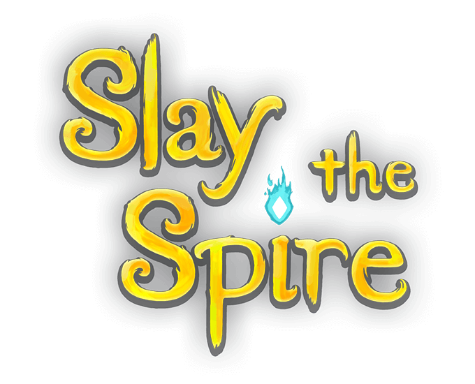

Bienvenue! Salutations, vagabond! Préparez vos decks, potions et reliques et asseyez-vous confortablement. Ici, vous apprendrez tout ce qu'il y a à savoir sur Slay the Spire . N'hésitez pas à intervenir si vous avez quelque chose à ajouter ou à commenter les pages que vous voyez si vous avez une suggestion à faire.
Qu'est-ce que Slay the Spire ?
Slay the Spire est un roguelike de construction de deck fabriqué par Mega Crit . Il peut être trouvé sur Steam , sur GOG ou sur le site Web de Mega Crit . Slay the Spire est un jeu dans lequel vous escaladez The Spire, gravissant ses étages en trois actes, rencontrant de nombreux ennemis, boss et événements en cours de route. Les chemins à travers chaque acte mènent tous à un dernier étage où une rencontre de boss difficile vous attend. Le contenu de chaque étage et les chemins disponibles à travers chaque acte sont générés de manière procédurale, de sorte que chaque exécution sera une expérience différente. Slay the Spire est un jeu principalement axé sur la survie, la collecte de cartes et la construction d'un jeu puissant pour éliminer vos ennemis. Bonne chance et bonne construction de deck! Ce jeu propose également des mods que vous pouvez télécharger et utiliser via Steam Workshop
